Our Story
Introduction
As Tibet opened cautiously to the outside world in the 1980s, most visiting foreigners were stunned by the rugged beauty of the landscape, the extent of the destruction wreaked on the culture since the Chinese occupation in 1950, the wonder and scale of the monasteries that were slowly being re-built, and the welcoming smiles of the Tibetans.
Throughout Tibet, and especially in the capital Lhasa, the Tibetan and Chinese worlds inevitably collided. Old Tibetan houses grouped around ancient temples stood in sharp contrast to new cement buildings springing up everywhere, and modern commercial materialism contrasted with the everyday lifestyle of the religious-minded Tibetans.
There was so much to explore and so much to learn. Tibetan furniture was not first on the list, but for us it turned out to be another captivating aspect of the culture of Tibet and the start of a deep involvement — buying, restoring, and eventually selling some exceptional pieces.
This book is a selection of our collection of authentic, antique pieces of Tibetan furniture collected over the last two decades. It is a tribute to the skilled and ingenious artisans who created each box, table, altar, or cabinet and the fascinating culture that inspired them.
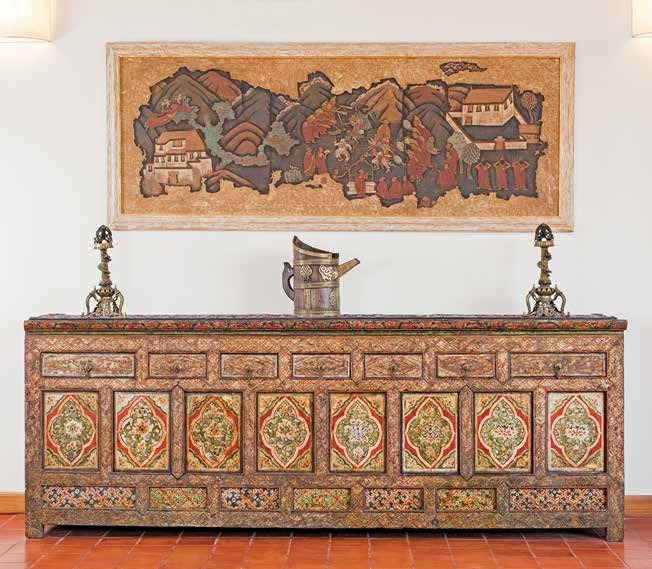
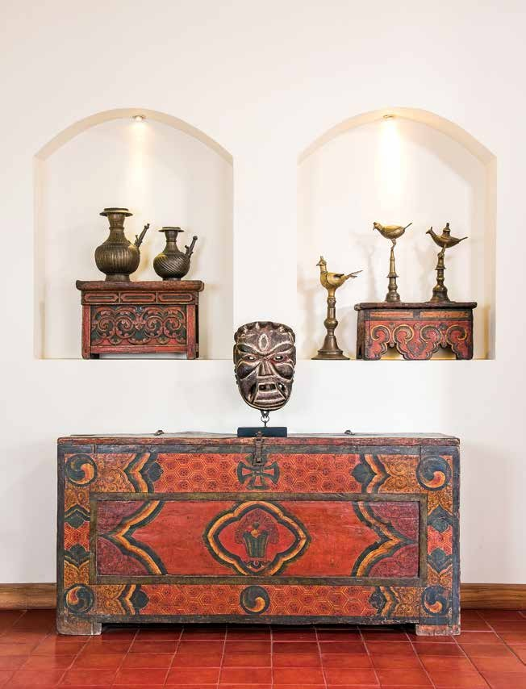
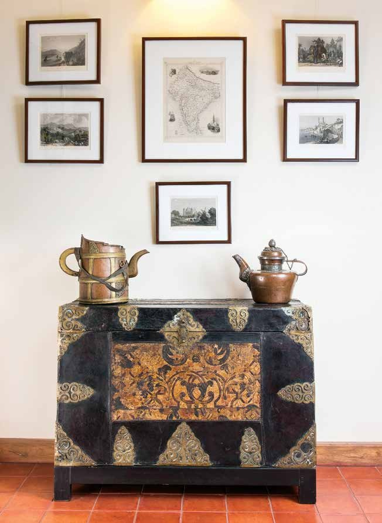
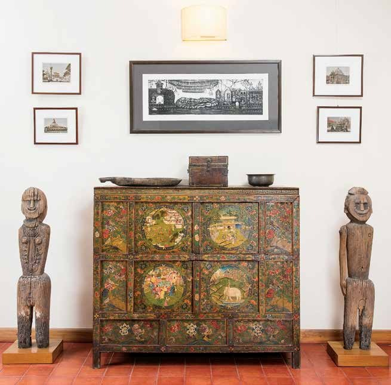
History and Origins of Tibetan Furniture Design
The single most important event that transformed Tibetan culture was the introduction of Buddhism as the state religion in the 7th Century by Emperor Songsten Gampo and his two foreign wives: the Licchavi Princess Bhrikuti from Nepal, and the Tang Princess Wencheng from China. Buddhism had a profound effect on all aspects of society and culture, including the use and function of Tibetan furniture.
Another influential factor was the availability of wood, a primary resource. Extensive forests covered the Eastern region of Kham and the province of Kongpo prior to the Chinese occupation and subsequent massive deforestation. However, most of Central Tibet and the northern plain of Chang Tang lie above 3,500 metres in altitude, so the type of timber available was limited to a white, soft poplar, known as chapa, or the more hard-wearing spruce, pine and fir which had to be transported at considerable cost from the Southern district of Lhoka.
Entering a Tibetan monastery, one is struck by the kaleidoscopic colours, textures and design. The walls are covered from top to bottom with murals of a vast array of Buddhas, Bodhisattvas, Arhats and their deeds or life stories. Immense gold statues dressed in silken robes, encrusted with jewels are flanked by carved and painted altars. Cabinets and long tables depicting goddesses are piled high with offerings and flickering butter lamps. Even the ceilings are alive with wonderful colours and auspicious images.
The Silk Road
One of the main routes on the Silk Road that went from Chang’an through Samarkand, Central Asia, to Palmyra in modern day Syria and then on to Europe, skirted just North of the Tibetan Plateau. Minor caravan routes made their way down from Xining across the northern plain to Lhasa, thus linking Tibet with Central Asia and beyond. A further ancient route, known as the Tea Horse Road, wound through the mountains of Sichuan and Yunnan onto the Tibetan plateau, taking tea to Tibet and ponies back to China.
To the West, Leh in Ladakh was a crossroads for caravans between Tibet, Kashmir and Yarkand. Routes crossing the mighty Himalayas linked Lhasa with Nepal and the Indian subcontinent. For centuries, these routes enabled the transmission of goods, skills, knowledge, culture and beliefs — as well as the exchange of artistic methods and tastes. This was particularly acute during the Yuan dynasty (1279–1368) when the cho yon or priest-patron relationship was established between the great Lama Sakya Pandita and the Mongol leaders.
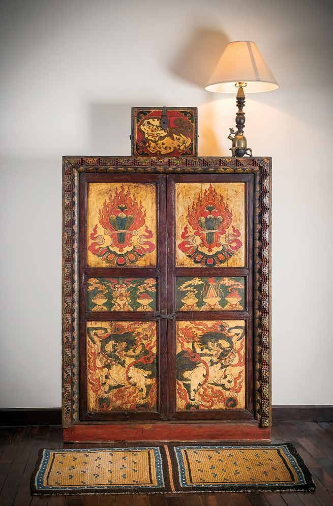
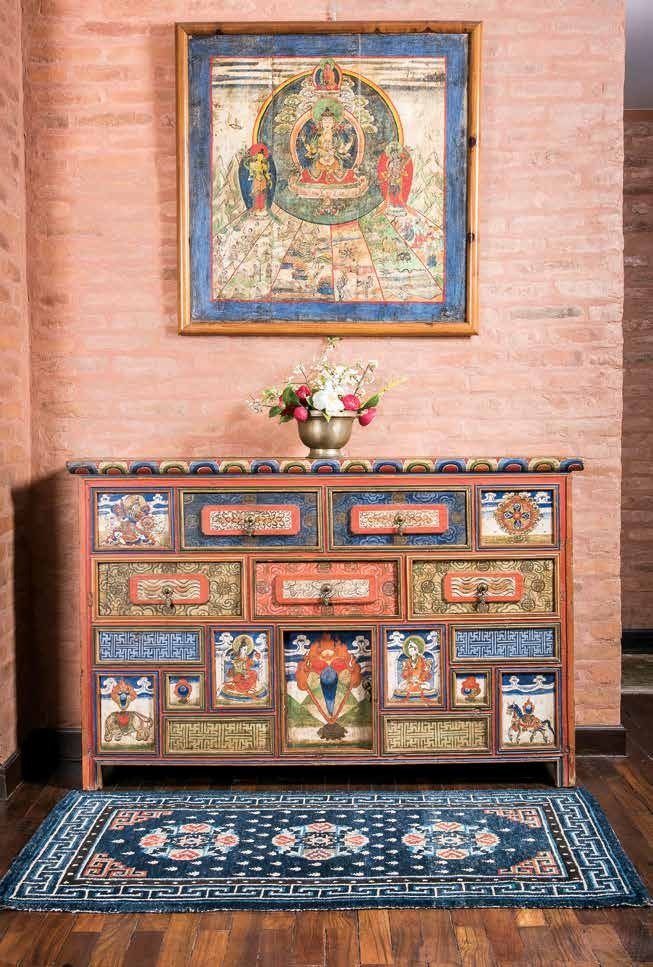
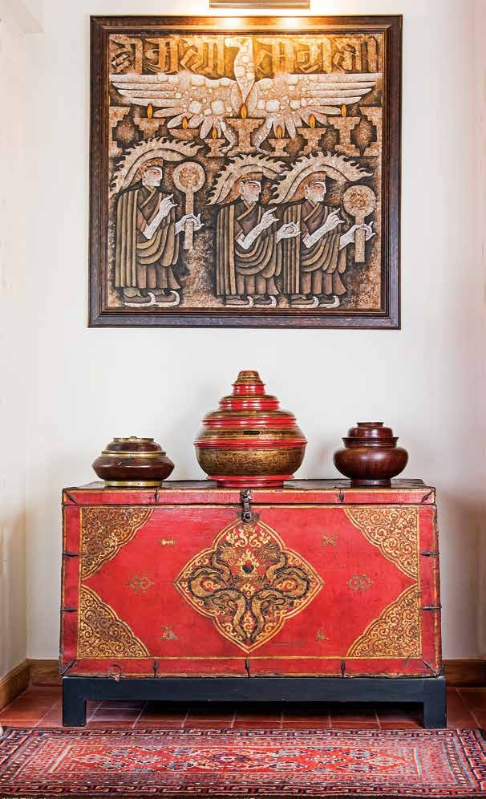
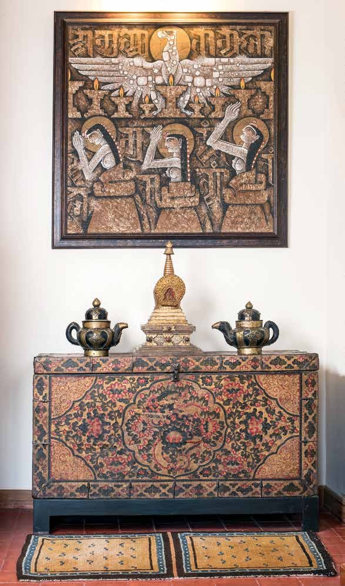
A Brief History of the Market in Tibetan Furniture
For centuries, Lhasa was an important trading centre between the Indian subcontinent to the South, China to the East, and Central Asia to the North-West. This trade came to an abrupt halt with the Chinese occupation of Tibet in 1950, provoking a steady flow of precious artefacts out of the country. Forty years later, a few pieces of furniture started appearing in Kathmandu’s curio shops. They were colourful, dramatic, exotic, seemingly rare, and therefore expensive.
Given the extensive destruction of Tibetan cultural heritage that took place, it is surprising that anything survived at all. Prior to 1950, monasteries and temples were repositories of magnificent golden, jewelled statues, stupas, thangkas and marvellous wall paintings. The destruction of these religious buildings began in Amdo and Kham as early as 1958, long before the notorious Cultural Revolution (1966–1976). The dismantling was systematic; first the valuable golden statues and moveable art works were removed and sent to Beijing, then furniture and other items considered ‘utilitarian’ were distributed locally amongst the general population, while sacred scriptures were burnt.
The Tibetans did what they could to preserve the remaining physical vestiges of their culture, including the monastic furniture in their possession. The first furniture to arrive in Kathmandu in the late 1980s came as it was. Later the dealers collected blackened pieces and cleaned off the soot that often covered the entire piece, then applied a thick, synthetic varnish to replace the shine.
Only a few pieces of furniture that arrived from Lhasa could go directly into a home, so we relied on a Tibetan craftsman, Sega, working at a small workshop in Kathmandu to clean and review each piece. For the carpentry work, we used traditional methods of joinery and replaced all metal nails that had been put in at a later date with wooden pegs or “butterfly” joints.
The First Exhibition
The first ever exhibition of Tibetan furniture was held at the Pacific Asia Museum in Pasadena, California between November 2004 and February 2005. This exhibition took place due to the enthusiasm, passion and determination of our friend the late Ruth Hayward, together with the curator David Kamansky. They published the catalogue in conjunction with the exhibition titled Wooden Wonders: Tibetan Furniture in Secular and Religious Life. We contributed a detailed description of how the furniture was made and its use in Tibet prior to 1950 in our article Tibetan Furniture: Construction, Form and Function.
Tibetan Style
Tibet absorbed outside influences in the form of religion from India and aesthetics from Kashmir, Nepal, Central Asia and China, but in the process created works of art that were unquestionably Tibetan. Religious art predominated. A thangka painter had to follow strict iconographic rules according to Buddhist texts, while a decorator or tson pa was responsible for painting furniture, architectural features and interiors. He was free to use his skill to combine any popular motif in a fresh and artistic manner, with particular attention given to the use of colour and shading.
Although the freedom of a tson pa was seemingly limitless, a definite Tibetan style emerged in the manner in which they executed the recurring motifs and observed some unwritten conventions.
Every piece of furniture, household object, or carpet was produced according to the Tibetans’ own aesthetic taste, thus was not merely a useful object but was resolutely beautiful and auspicious by design. — Camilla Corona
The Dealer’s Experience
Every collector knows the excitement of entering an Aladdin’s cave filled with hidden treasures and intriguing finds. Stepping into the house of a Tibetan dealer offers a unique glimpse into that people and their way of life.
Luca and I clearly recall our anticipation of entering a Lhasa dealer’s home, adjusting to the darkness after the bright mountain sunlight, and being led through the sombre corridor to the main room. The smells of incense, butter lamps, and momos would waft through the air as we sat on the wooden couch, covered with a beautiful, if dusty old khaden rug during the daytime. The lady of the house would enter with a thermos of steaming Tibetan butter tea, the perfect energy drink for high altitudes.
Settling into this strangely familiar environment, we caught up with our hosts on family news, the current situation, and the latest dealer gossip: who had bought what from whom, for how much, and who had overpaid for an infamous fake. Meanwhile, our eyes were roving around the room, glimpsing a perfect pair of old cabinets, a delightful sooty table, or a precious old teapot placed casually in front of us, the potential customers.
During these encounters, we started by looking around with a feigned air of indifference. Meanwhile, the dealer, usually a Khampa, declared how much he paid for his latest acquisition. After to-ing and fro-ing and often some well-practiced theatrics, we would remind him of our reputation for prompt payment and the deal would close.
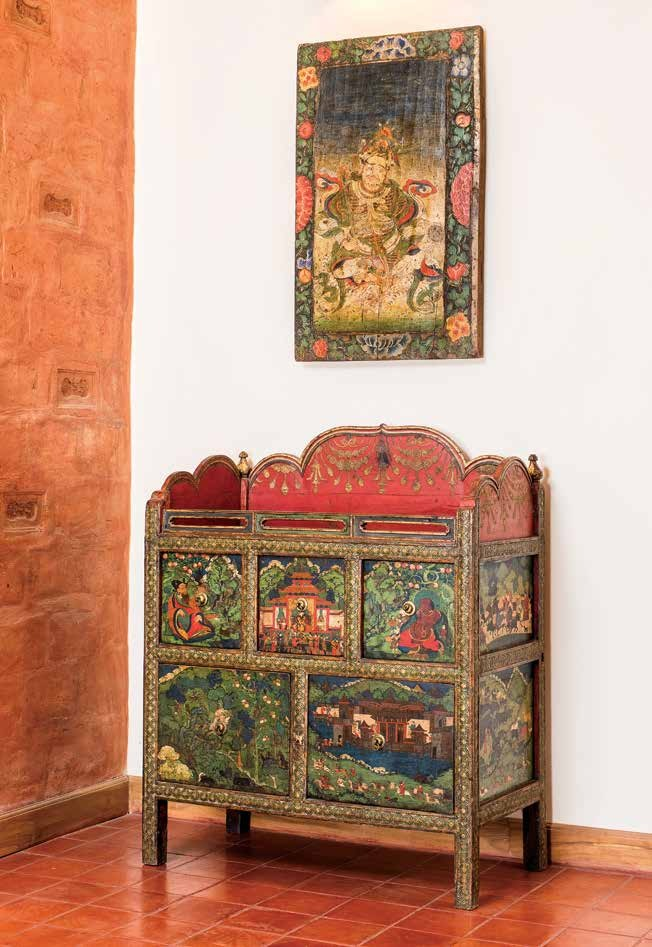
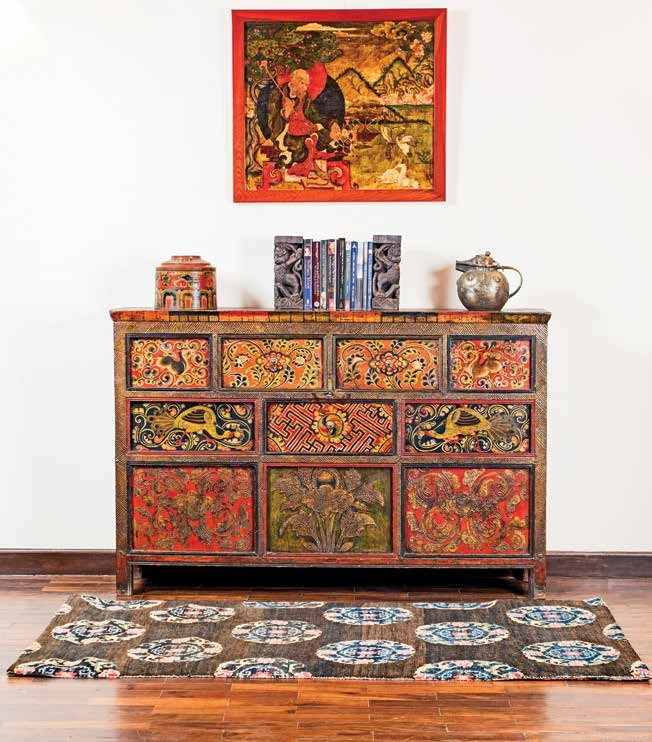
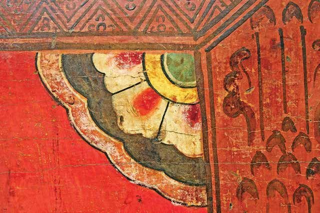
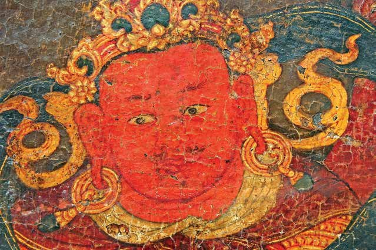
Epilogue
Following the inevitable natural law of impermanence, the flourishing trade in Tibetan furniture of the 1990s and early 2000s between Tibet and Nepal slowed to a trickle. Not least among reasons for this was the increasingly disruptive Insurgency (1996–2006) in Nepal, combined with the ever-tightening control exerted by the Chinese Communist Party over Tibet.
In China, a burgeoning middle class with cash to spare and an aesthetic taste for dragons meant that buyers started coming from there rather than the West. Thus, in the 2010s, trucks full of old painted furniture originally from Tibet were travelling from Nepal to buyers in China.
In 2020, the Covid pandemic changed the world. When travel and trade pick up again, we are confident that the current dealers and collectors of antique Tibetan furniture will return to Nepal, which still has some of the best collections in the world.